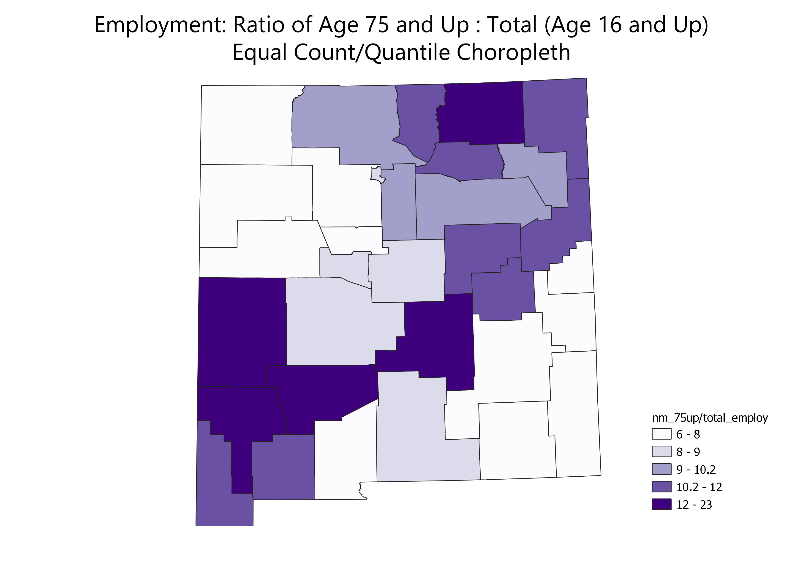
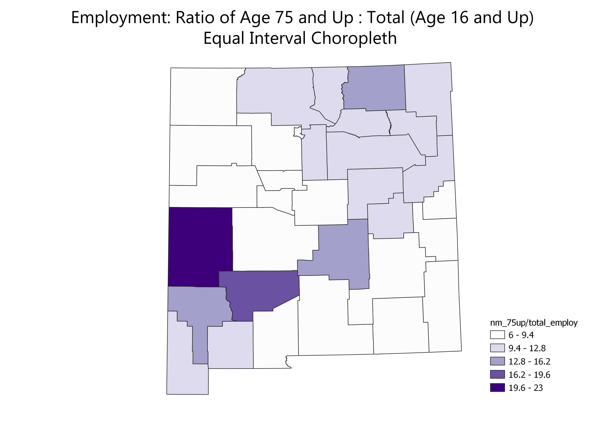
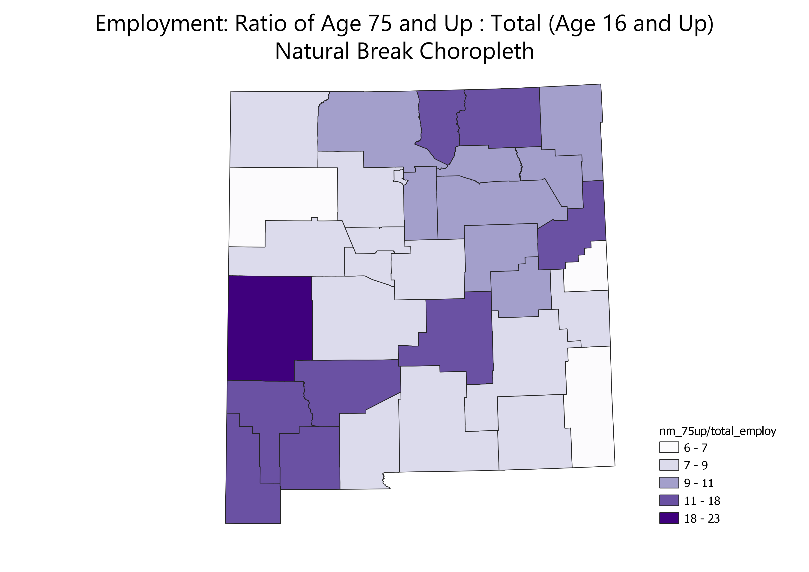

Homework 6 Part 2: Census Data Ratio Choropleth Maps
Nea Strawn
The maps illustrate employed individuals ages 75 and up vs the working age population (those 16 and up) in New Mexico in the past 12 months. The data was acquired from data.census.gov. It is based on the American Community Survey.I chose this ration out of curiostity for how much of the state's employed people are above the typical retirement age.

Equal count classification is good for ranking data and gives each class the same number of values. However, it does not show the difference between each rank/class.

Equal interval classification is good for show data in an unbiased ranking. However, it typically ignores the distribution of the data.

Natural break classification is good for showing the real classes in a set of data. However, these class ranges can be very different in size.